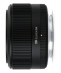

器材库 > APS画幅镜头 > 30/2.8 EX DN

详细规格
镜头类型
标准镜头
发布日期
2012-01-10
焦距
30mm
等效35mm画幅焦距
M4/3：60mm / E：45mm
最大光圈
f/2.8
最小光圈
f/22
视角（对角）
M4/3：39.6° / E：50.7°
镜头结构
7片/5组
非球面镜片
2片
光圈叶片
7片
最近对焦距离
30cm
最大放大倍率
0.123倍
驱动马达
AF马达
滤镜口径
46mm
镜头卡口
Micro 4/3, Sony E
防抖
否
颜色
黑色
尺寸
60.6×38.6mm
重量
135g
arondes2013-01-26 03:244.58 分
操作性 4.50耐用性 4.50性价比 5.00解像力 4.50色彩还原 4.50机械结构 4.50
yd8001252012-07-08 15:23
莫属2012-05-07 13:295 分
操作性 5.00耐用性 5.00性价比 5.00解像力 5.00色彩还原 5.00机械结构 5.00
煌熇2012-04-16 12:574.42 分
操作性 4.50耐用性 4.50性价比 5.00解像力 4.50色彩还原 4.00机械结构 4.00
cero2012-04-09 12:424.58 分
操作性 4.50耐用性 4.50性价比 4.50解像力 5.00色彩还原 4.50机械结构 4.50
高小石2012-04-03 08:384.5 分
操作性 5.00耐用性 4.00性价比 5.00解像力 4.50色彩还原 4.50机械结构 4.00
产品图 / 样片
适马 30/2.8 EX DN
评测 / 相关文章
- 标头新选择：适马30/2.8 EX DN评测 （存档）
- ［试用］选择从SIGMA 19/2.8和30/2.8开始 （存档）
- ［试用］索尼E口 适马30/2.8 EX DN开箱 （存档）
- ［资讯］适马微单镜头30/2.8 EX DN海外样片 （存档）
- ［资讯］适马推出三款镜头新品 （存档）